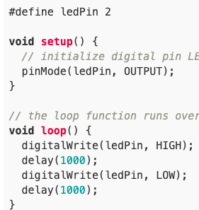
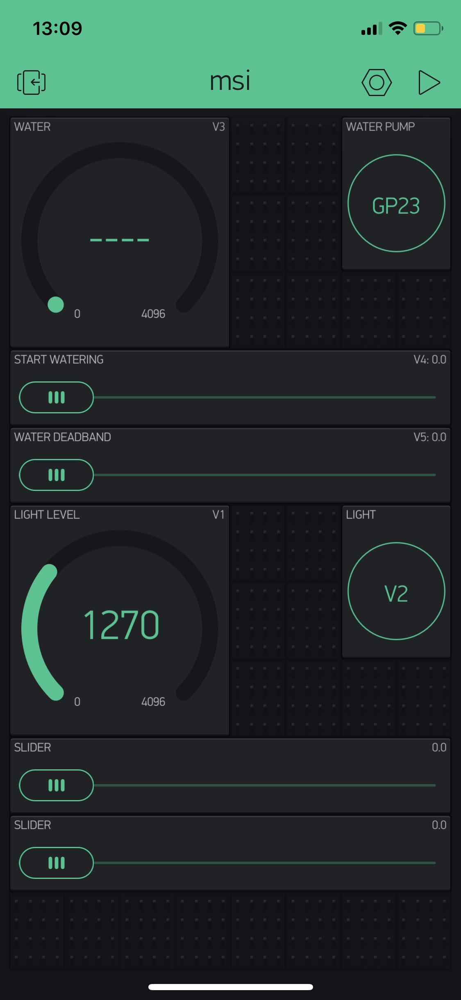
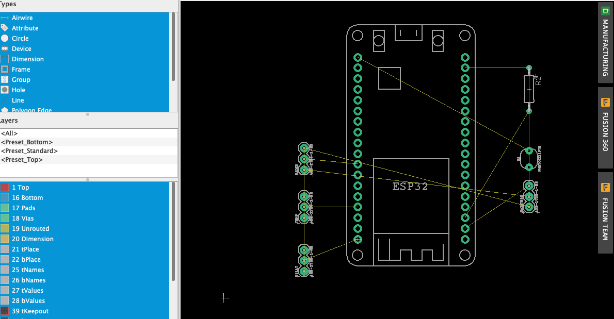
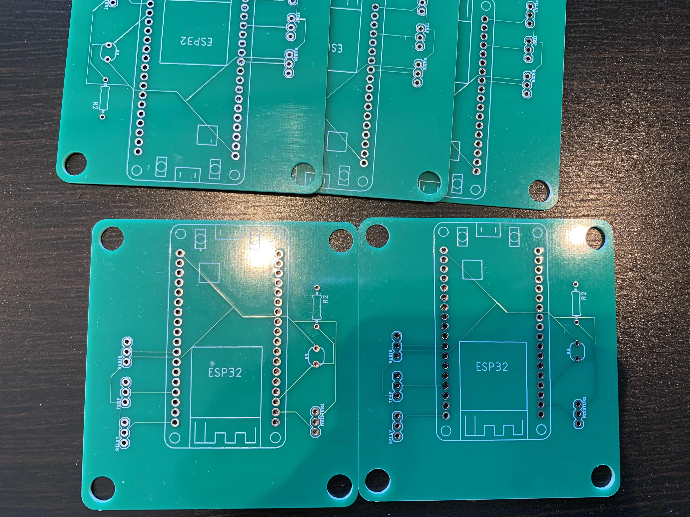
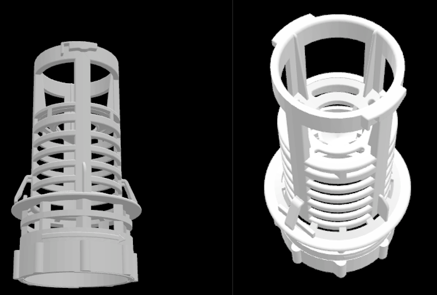

Beginfase IoT schakeling
De eerste les van de workshop IoT schakeling was een soort van introductieles. Voor deze workshop heb ik nog nooit met deze materialen of software gewerkt, dus ik was erg benieuwd. In de eerste workshop kregen wij alle materialen die nodig waren om een schakeling te bouwen en
de programma's die nodig waren om de schakeling te programmeren.
Het doel van deze workshop is om door middel van de handleiding op robotexchange een schakeling met sensoren te bouwen die uit zichzelf een plant water kan geven. Dit door een aantal sensoren die onder andere de hoeveelheid licht, lucht vochtigheid
en temperatuur kunnen meten. Dit in combinatie met de software die de schakeling bestuurd zal een goed concept moeten leveren voor een automatisch bewateringssysteem.
De eerste stap was het installeren van Arduino. In dit programma wordt de code geschreven die de besturing van de schakeling vormt. Na het installeren van Arduino moest het programma goed ingesteld worden voor het bord wat wij gebruiken: esp32. Ik moest
ook nog een extra driver installeren omdat ik een Mac heb. Nadat dit allemaal gedaan was konden we beginnen met het invoeren van de codes. De eerste stap was het laten knipperen van het lampje. In de code wordt een loop gezet die als eerst het ledje laat branden door
een hoge voltage en vervolgens dimt door een lage voltage.

De volgende stap was het laten dimmen van het lampje. Dit door een loop die gebruikmaakt van een delay om het lampje te laten vervagen. Op het bord zitten nu de ESP, het weerstandje en de lichtsensor die allemaal in een circuit met elkaar verbonden zijn. De ESP is vervolgens
met een kabeltje met de laptop verbonden om het programma af te lezen. De waarde van de weerstand is 1K ohm. Het doel van de volgende opdracht is dat het lampje gaat branden wanneer de lichtsensor onder een bepaalde grens komt. Op de Serial monitor kan je de waardes zien. Met de
volgende code wordt het lampje bediend:
Om het lichtniveau te meten moest er een stukje extra code aan toegevoegd worden. Dit stukje vertelde de ESP bij welk niveau het licht aan moet gaan. Dit is bij een delay van onder de 200 (lightInit-LightVal). Dit is het laatste deel van stap 1.
Middenfase IoT schakeling
In het tweede deel van de IoT schakeling gingen we verder met het in elkaar zetten van het bord en de software. De eerste stap hierbij was het weergeven van de waarde die de sensoren meten, op je telefoon. Hiervoor moest de Blynk app geïnstalleerd worden. Door deze app te verbinden met de
Arduino software worden de waarde direct doorgespeeld naar de app. De connectie werd gemaakt door een netwerk naam, de token die je ontvangen hebt op de mail en het password van het netwerk. Het eerste onderdeel dat je mogelijk kon zien op je telefoon was de LDR (light dependant resistor).
Dit zal er als volgt uit:
Vervolgens kwam de Gauge (weerstand) erbij. Ook deze moest ingesteld worden op het eerste netwerk (V1) en het elke seconde meten van de waarde. Hierna moest de klik aan klik uit switch op het bord gemaakt worden om een actie uit te voeren op basis van de gemeten waardes. Dit kan getest worden door de transmitter te
verbinden met de switch in het stopcontact. De rest van de lessen zijn we druk bezig geweest met het in elkaar zetten van de volledige schakeling met alle sensoren en meetapparatuur om de plant goed water te kunnen geven. Hier een aantal afbeeldingen van de uitkomsten:

Afrondingsfase IoT schakeling
Nadat alles in elkaar dat en alle code geschreven was was het tijd om terug te kijken op wat ik deze workshops allemaal geleerd heb. Vooraf had ik geen idee wat me te wachten stond omdat ik nog nooit met zoiets bezig ben geweest en het eigenlijk niet echt in mijn straatje ligt. Toch is het leuk om eens iets anders
te doen dan wat normaal geleerd wordt op je studie. Wel heb ik het beschrijven redelijk oppervlakkig gehouden omdat ik te weinig kennis van de codes heb om het gedetaileerd te beschrijven. Ook is dat iets waar ik als bedrijfskundige niet echt mijn interesses heb liggen. Wel vind ik het goed om te weten hoe deze sensoren
die ook steeds vaker terugkomen binnen productiebedrijven werken en informatie ophalen en omzetten in een actie. Op deze manier heb ik dit wel goed meegekregen omdat het vanaf de basis uitgelegd is. Door een beeld te hebben van de werking komt het ook eerder in mij op bij bijvoorbeeld het bedenken van een nieuwe innovatie voor
een bedrijf. Erg leerzaam dus!
Doel van de PCB
Na het ontwerpen van de IoT schakeling moet deze digitaal gemaakt worden. Het bord onder de ESP is namelijk niet zoals het gebruikt gaat worden bij de uiteindelijke schakeling. Het doel van de PCB is het vervangen van dit bord voor een zelf ontworpen bord. Hiervoor moeten alle verbinden die in de IoT schakeling zitten vertaald worden naar
de PCB. Ook de onderdelen die erop zitten moeten digitaal worden ingevoerd.
Ontwerpen van de PCB
De eerste stap bij het maken van de PCB was het kennis krijgen van het programma Eagle. Ik had zelf nog nooit gewerkt met dit programma, maar de basis was vrij makkelijk aan te leren. Allereerst moesten we een aantal oefeningen doen met het maken van een PCB en het onder de knie krijgen van Eagle. Vervolgens gingen we bezig met ons eigen ontwerp.
Dit ontwerp bestond uit een Schets en een Bord. Allereerst moest de schets gemaakt worden met de onderdelen die in de IoT schakeling zitten. Dit waren de Radio, Temprature, Moisture, R1 en Relay samen met de ESP32. Deze onderdelen moesten worden gedownload in Eagle. De schets werd gemaakt op basis van hoe de onderdelen met elkaar verbonden waren
op de IoT schakeling. Dit zag er als volgt uit:
Vervolgens was het zaak om het bestandje over te zetten naar hoe de PCB eruit zou komen te zien. Allereerst stonden deze onderdelen nog door elkaar en zou er weinig van te maken zijn. Dus moesten ze in goede verhouding worden gesleept op de eerste laag. Vervolgens moest er een afbakening omheen worden getrokken als het einde van de PCB. Nadat alles
goed in elkaar zat moesten de namen veranderd worden en de autoroute gedaan worden om te testen of de PCB het deed. Deze autoroute was bij mij niet gelukt, dus had Matthijs die gedaan. Hier een afbeelding hoe de PCB er voordat hij gemaakt werd uit zag:

Vervolgens werd het ontwerp geprint en kon hij opgehaald worden tijdens de les. Hier een foto van hoe deze eruit is komen te zien:

Reflectie
Naast het maken van een IoT schakeling was het ontwerpen van een PCB voor mij ook de eerste keer. Ik was verbaast toen ik zag hoe hij eruit was gekomen en vond het mooit om te zien dat zoiets zo gemaakt wordt. Ik moet wel zeggen
dat ik onvoldoende weet van de werking van al de achterliggende systemen en communicatie, maar dat ik het wel interessant vind om meer te weten over de werking van een PCB.
Theorie
De lessen over 3D-printen zijn verdeelt in een stukje theorie en een stukje praktijk. In dit kopje zal ik het stukje theorie behandelen wat we hebben geleerd tijdens de workshop. Wij zijn met ons project bij ATAG ook bezig met 3D-printen, dus ik had al een
kleine voorsprong. Toch was ik erg benieuwd naar wat er vertelt zou gaan worden en of we hier nog iets aan hadden binnen ons project.
Allereerst werd er verteld over het verschil tussen AM (additive manufacturing) en de conventionele manier van produceren. Hierbij heeft AM het voordeel dat het ontwerpvrijheid heeft terwijl conventioneel aan bepaalde ontwerpregels moet voldoen. Wel is materiaal
nog relatief door en is kwaliteit en accuraatheid soms nog een probleem. Bij AM heeft complexiteit geen gevolgen op de kosten, dit kan een groot voordeel zijn. Ook de curve hoeveelheid ten opzichte van de kosten is relatief klein. Zie in de afbeelding de redelijk:
AM wordt momenteel grotendeels toegepast als prototypes, kunst, spareparts of in het onderwijs. Ook in de zorg en ruimtevaart wordt het veel gebruikt vanwege de flexibilitiet en de gewichtsafname. Ook zijn er verschillende technieken waarmee er geprint kan worden. De meest gebruikte
voor de particuliere markt is FDM (zoals je wellicht wel kent met het draadje plastic wat wordt gesmolten), voor de professionele markt is de meestgebruikte techniek SLS (Selective Laser Sintering). FDM werkt doordat de kop van de printer verwarmd wordt en het plastic smelt. De kop is heeft een opening van
4mm die een product laagsgewijs opbouwd.
Ontwerp bakje
Het ontwerpen van het bakje voor de IoT schakeling was voor mij op mijn "oude" Macbook helaas niet mogelijk. Na vele pogingen op zowel VMWare als de laptop zelf heb ik ervoor gekozen om het op een andere manier aan te pakken zodat ik er alsnog super veel kennis van krijg. In ons project heb ik me namelijk al extra verdiept
in de werking van 3D-printen en de voordelen ervan. Daarom heb ik mij extra verdiept in de ontwerpvoordelen die het binnen bedrijven kan bieden op zowel het gebied van kosten als ontwerp. Ook heb ik meegekeken bij mijn projectteam om alsnog kennis op te kunnen doen. Dit om alsnog te kunnen voldoen aan de competentie en de toepassing van 3D-printen vanuit een minder ontwerpgerichtte context te zien, maar
meer vanuit een bedrijfskundige. Dit om later bij bedrijven te kunnen adviseren hoe zij de implementatie van 3D-printen het beste in gang kunnen zetten.
Zo heb ik tijdens het project een aantal interessante bedrijven bezocht die continu bezig zijn met de technologie. K3D is daar een van. Ik wil graag een aantal voorbeelden laten zien waardoor K3D grote kosten heeft weten te besparen, zelfs met het relatief dure metaal 3D-printen. Dit om een goed beeld te kunnen krijgen van waardoor
de kosten zo laag mogelijk worden en waar de grote voordelen op ontwerpgebied zitten. Dit fenomeen heet in de wereld van 3D-printen het topologisch ontwerpen of de topologische optimalisatie. Hierbij ga je kijken naar waar een grote hoeveelheid materiaal noodzakelijk is en waar juist niet. Ik wil dit behandelen door middel van een casus van K3D:
Wat K3D hier heeft gedaan, is voor hun moederbedrijf Kaak een onderdeel van een deegsnijder opnieuw topologisch ontworpen. Wat het onderdeel doet is het snijden van deegbollen voor het bakken van brood op de broodbaklijn. Er deden zich hier een aantal problemen voor: het brood bleef deels plakken aan het mes waardoor deze schoongemaakt moest worden, het gewicht was te zwaar waardoor hij niet de gewenste snelheid
kon behalen. Door te kijken vanuit de functionaliteit in plaats van de manier van produceren kunnen er veel materialen geschrapt worden. Uiteindelijk is de afbeelding links tot stand gekomen. Deze kop heeft een gewicht van 80 gram ten opzichte van de oude 811 gram. Dit levert ten minste een productiekosten van -60% op, maar er zit nog een ander voordeel aan: door de vermindering van gewicht kan de productie vele malen sneller draaien.
Hierdoor kan tot wel -1000% van de kosten bespaard worden! Naast de kostenbesparen is er ook nog eens nagedacht over het andere probleem: de plakkende deeg. Dit is opgelost door in de mesjes gaatjes te maken om er vervolgens een luchtstroom door te laten laten, erg indrukwekkend!
Naast de topologische optimalisatie heb ik ook de andere kant van ontwerpen beter leren kennen. Het inscannen van producten wanneer er geen tekening is. Het komt bij bedrijven namelijk regelmatig voor dat er geen tekening van een onderdeel is, omdat zij deze hebben ingekocht. Wanneer er geen tekening is, wordt 3D-printen ook heel lastig. Waar wij onderzoek naar gedaan hebben is de mogelijkheid om deze producten in te laten scannen. Een voordeeld
hiervan was ons filter. Het filter was ingekocht bij een derde en er was geen tekening beschikbaar. Wat wij gedaan hebben is een partij gezocht die hierin gespecialiseerd is. Wij kwamen uit bij Nico van Geopoints. Wat er bij dit proces gebeurt is het volgende: hij kijkt naar de functionele delen van een bepaald onderdeel, haalt het onderdeel uit elkaar waar nodig, scant hem in met zijn scanners van tussen de 10 en 80 duizend euro en gaat vervolgens
aan het nabewerken. Dit nabewerken bestaat uit het ontwerpen voor 3D-printen. Dus materiaal toevoegen waar nodig, of juist weghalen. Dit totale proces kostte voor ons 215 euro. Dit was het resultaat:

Zelfontwikkeling
Ook in deze workshop heb ik weer veel geleerd. Het was namelijk goed om met Herold te sparren over ons project. Hij heeft namelijk een goed beeld van de mogelijkheden, terwijl wij weer een goed beeld hebben van de situatie waarin ATAG zich bevindt.
Workshop solderen
De laatste workshop van het thema Smart Technology was het solderen. Ik had zelf nog maar enkele malen gesoldeerd dus er stond me een aardige uitdaging te wachten. Van te voren kreeg iedereen zijn eigen PCB en had iedereen het bakje met onderdelen mee.
De bedoeling was om het witte bord onder de ESP te vervangen door de PCB. Hiervoor moesten alle onderdelen met de pinnetjes door de gaatjes van de PCB en vervolgens met een beetje tin vastgemaakt worden. Allereerst had ik de ESP vastgemaakt aan de PCB.
Op het begin was dit even wennen, maar ik had het al vrij snel door. Vervolgens ging ik verder met de andere onderdelen. Het was slim om de namen bij de onderdelen te zetten om te goed over te kunnen zetten. Het was alleen nog even meten welke aan welke kant moest,
maar dit was vrij snel opgelost. Vervolgens moesten ook die worden vastgemaakt zodat alle onderdelen aan elkaar verbonden waren. Daarna had ik het pompje nog met een krimpkousje vastgemaakt zodat ook deze goed bleef zitten. Leuke workshop!
3D-printen bakje
Omdat ik zelf geen bakje had ontworpen ging ik met Coen mee om zijn bakje eraf te halen en vervolgens de deksel te printen. het was erg interessant om te zien op welke manier het ontwerp geplot werd en vervolgens begon met printen.
De eerste keer dat het dekseltje werd geprint was de tafel niet goed gestabiliseerd. Hierdoor kwam er teveel structuur op de print waardoor hij delen van elkaar aftrok. De keer daarna ging het helemaal goed en kwam de deksel er na 12 uur mooi uit!